全国五子棋团体赛安徽连珠代表队参赛日记【图爆多，进入请当心】
#1 全国五子棋团体赛安徽连珠代表队参赛日记【图爆多，进入请当心】 作者：有志青年 发表时间：2008-6-26 19:21:03
【本文由2008年全国五子棋团体赛安徽连珠代表队的领队王芳清(哥哥)所写，原文发表于他的qq空间中，点击进入】
6月6日下午1点钟，我们便聚集在合肥火车站，苗老师，风光在车站给我们送行，没有太多的话语，没有炫亮的台词，只要求我们能赛出水平，赛出我们的风格。
首先看全家福：
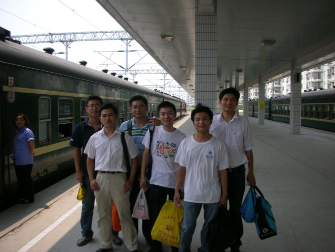
这是我们从合肥出发的队员，前排：王有志，陈柱，白欣 后排：张校玮，王芳清，吴登峰。
这次的比赛，我是以领队的身份参加的，本来是苗老师带领大家去的，但是因为她的身体原因，最终还是我去了。（去之前的头二天晚上，有一个小插曲，我在家里烧饭，在剁鱼呢，哪知，手下得大快，另外一支手没有及时撤退，结果，兄弟自相残了，伤了一个大拇指，还是得感谢对手兄弟手刀法不准呀）
很快，只用了一个半小时，我们便到了蚌埠，见到我们久违的小非鸟同志，也是我们这次比赛，我们队里最小的一个，可惜当时没有照一个集体照（这个领队当得有点失败）。非鸟的全名叫芦海，是我们队里最强的队员之一，为人很低调，我们都很喜欢他。
在火车上，也没有照相，打打牌，下下棋，没有对赛前开什么局去做详细的研究，这也是可能导致我们最后未能拿到一个好的名次的原因吧，所以说这个领队当得差呀。
于是就这样大家聊着天，下着棋，很快便进入了梦乡，脑子里全是棋呀，没有其它的。唯一让我们很H的就是风光姐姐（小鸟叫阿姨，其实校玮也应该叫的）给我们准备了很多吃的，苗老师也给我们准备了几瓶银鱼（哇噻，好强的东西呀），一些粽子（有肉的，有甜的）。让我们在车上很H呀。
第二天早上，我们5点10分便起来了，因为5：30就到站了，下了车后，说实在的石家庄的空气不怎么好，空气很差。
因为不知道路，便打了两辆车，以为很近，跟司机还价，说10元到诺亚（开发区），人家司机很诧异，说你做什么车都到不了，后来上车打表，到了附近后31元，很贵呀，价跳得很快。
下了出租后，找了半天，小鸟打电话问了李一（可能还在呼呼呢，结果被打了3次，搞醒了3次，估计李一有点郁闷），后来还是问了晨练的老大爷们，才晓得，走了一点路后，找到地点，我们便去吃早饭了。说实在的石家庄的早餐份量很足呀，第一天早上，点了7个果子饼（不晓得可对），然后是6份板面，哇噻，吃得很爽，不过剩了不少呀。
吃完后，联系上了郑秋老师，她人很好，给我们安排了临时的休息室（因为不能洗澡，没有电视，有空调，但是装饰用的），休整一下，看看时间8：10分了。
#2 第一天 彩虹升起 作者：有志青年 发表时间：2008-6-26 19:26:59
8：30分开幕式正式开始了，到场的领导，我就不介绍的，我只认识两人：徐炳继老师，郑秋老师。其他的人，有个把见过，不熟。（开幕式就不讲了）
开赛前，首先介绍一下这次参赛队伍吧，哇噻，这次的队伍可强了，比去年强多了。上海组了三个队来，可谓是梦之队，北京组了四个队来，也很强，尤其是那威队，实力强呀，还有去年的冠军浙江队，很面熟呀，徐永伟老师还是那么的瘦，肉全部给了五子棋吃了，他们这次的队伍也很强，其中有两名是网络棋手，都见过的。这次的河南，也蛮强的，都很熟呀（唯一不爽的是，一大早在创业宾馆见到了河南队，我主动打招呼，居然没有人理，郁闷，心里下定决心，砍了河南），这次还有，江苏代表队（有个MM），河北地方队，和往年一样，小朋友队也到了，杨老师似乎比去年更加漂亮了。。。队伍就介绍到这里，大家可以自己看下面的表：
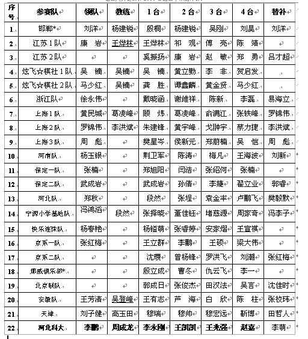
看到台次，我就来气，这个是报名用的，没有想到他们就这次做台次了，后来问了一下肖斌老师（副裁，也不知道什么时候做正的），说不能改了，很是郁闷，我又找到了郑秋老师，她说昨天晚上开领队会，关于台次的事情，差点打了起来了，我当时呃了一声，接着无语，又去找了徐炳继老师，他也无语，那我也无语了，回去跟队员们讲，他们都无语了。。
现在来介绍一下我们的棋手：王有志，参加过多次大赛，2000年的全国赛，和多届浙江赛，对明月，明星有很深的研究，不过自信心不足。芦海，参加过两届全国大赛，少年组两届亚军，实力很强，熟知各种开局，对斜月，疏星有很深的研究。白欣，医学硕士，对各种局面了解较多，因平常用于专业研究，对定式不怎么熟知，计算能力强。陈柱，科大电气专业硕士，很早以前研究过各种局面，对瑞星骗有独到之处，因为学业原因，多年未下。张校玮，农科学士，因为快毕业了，对五子棋下了一番工夫，对斜月有很较深的研究，但还未开花，为人诚恳，稳正，大赛经验不足。可以说我们这次比选手，除王芦两位经验较足，主要是以锻炼队伍为主。
第一轮对局 安徽连珠代表 ： 石家庄宁源小学基地队
对阵表：
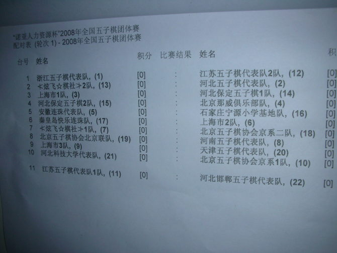
照片赏晰（赏之前，说一下，这次一比赛开始到第15分钟允许，领队或是教练在里转悠，新鲜的）：
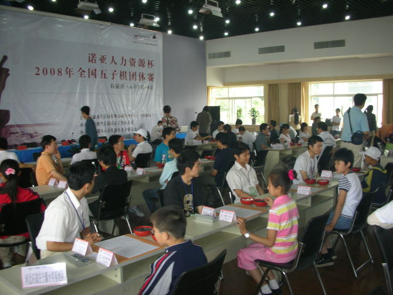
就传一张，别小看这些小学生，对定式可强了，不过还是被我们以4：0拿下了，具体的谱，想要的，请联系清清。嘿嘿。。。。
第二场比赛 安徽连珠代表队 ： 京系1队
北京京第2队的整体实力还是相当强的，先看照片：
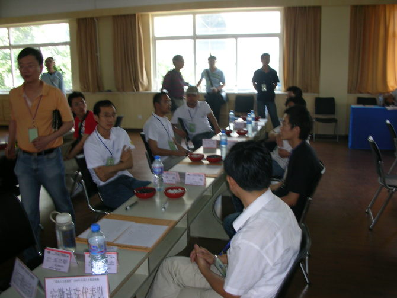
他们台次是：一台 王利群 二 李鹏 三台王硕 四台梁大伟
这4人都很强呀。通过紧张的比赛，一台很快被老王做了两个43，结果投了；二台好被小鸟拿下，三四台对手胜了，的确他们的实力强于我们三四台。这一局2：2和了，我们得了1.5分。积分表：
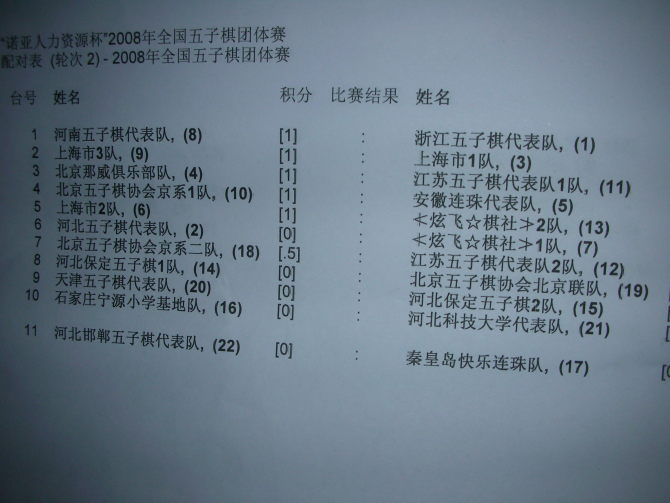
第一天的第三轮
安徽连珠代表队 ： 京系2队
在写之前，首先讲一下，在比赛过程中，我不断地与苗老师和风光联系，苗老师及时地把我们的战绩发到网上，与群友们一友分享。
第三轮对阵表：
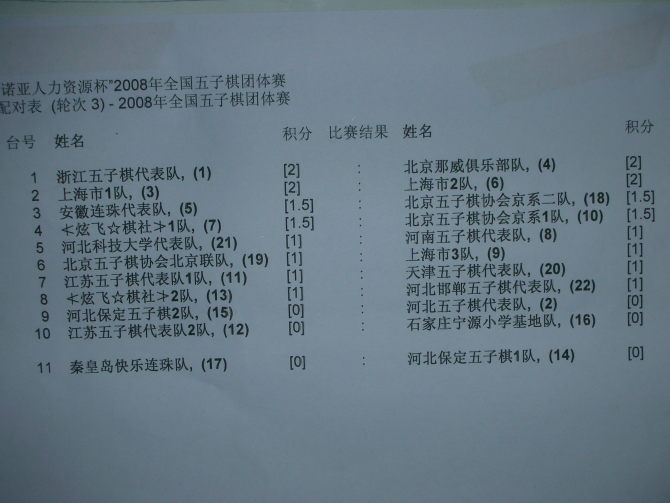
第三轮可谓是强呀，对手是：一台沈瓒 二台曾扬锋 三台罗红飞 四台张红梅
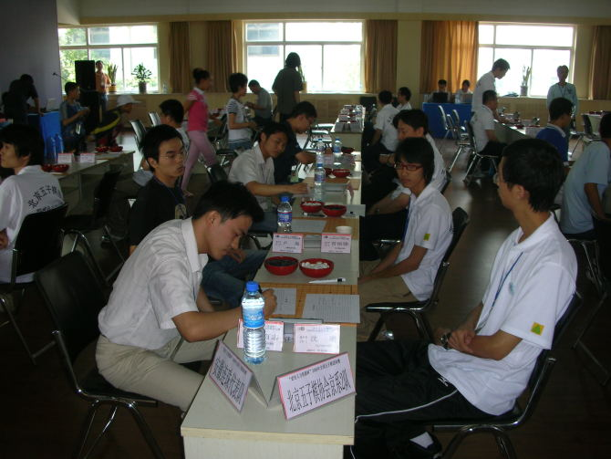
而此时我也很是紧张，虽然这次我们的实力不济，但我们也想拿一个好成绩，因为这一场特别的关健和重要。这局，我也换上校玮，陈柱休息一轮。
一台老王，还是给对手开了一个明月，把对手给骗了。（要谱请联系清清）
这个二台，我们开始没有特别的重视，因为小鸟的实力，我们非常清楚，而对局到中后盘时，盘面都基本满了，双方都到了尾盘，我们也着实紧张，因为三台已经败了下来，目前的是1：1（校玮那局回头细说），最终二台和棋了，
#3 第二天 迅速转阴 作者：有志青年 发表时间：2008-6-26 19:40:25
#4 Re:全国五子棋团体赛安徽连珠代表队参赛日记 作者：有志青年 发表时间：2008-6-26 19:56:07
#5 回 程 作者：有志青年 发表时间：2008-6-26 20:05:51
结束了三天的比赛，大家齐聚在火车北站，正好遇到了浙江队的除永伟老师和李磊（一个新星）。我一人独坐在北站前近2个小时，无事看，到处看，说实在的北站没有什么好看的。后来校玮和柱回来了，才知道他们去了‘牛肉火烧’，这也是老王从来开始喊的，终于在走的前1个小时，实现了美妙的愿望，结果回来说，也就那个味，不好吃。
上了火车后，便开始补票，登峰一马当先，拿到了第6号，很快，我们便有卧票，可以好好地在火车上睡一觉了。在车箱里，我们便开始摆棋，大家的兴致都很好，还打了擂，分析了那个斜月的骗，登峰，柱子，小白，校玮，我边说边笑，整个车厢仿佛只有我们，旁边的其它人，也凑上来看看，很是起劲。
后来，李磊来了，与小鸟下棋，两人的境界无比的高，全用同色下，强呀。可惜的是当时忘记照相了。我们一直闹呀，熄灯了。大家便很快进入了梦乡。
早上6：00大家便醒了，洗洗刷刷，准备下车了。此时偶的手不知咋地更加的痛了。
先看照片：
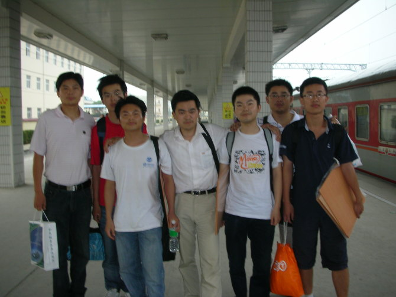
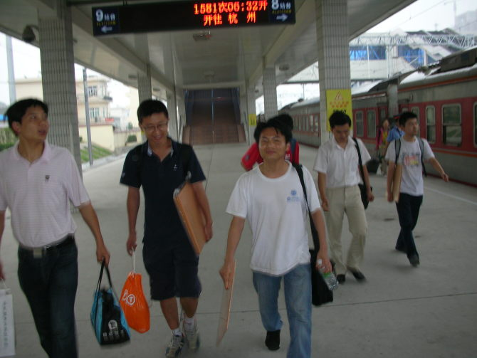
早晨还下着小雨，稀稀粒粒的，出站后，大家便各自散去，上班的上班，回家的回家，而小鸟便和小白一起走了，小休息一会。因为中午风光姐请他吃饭。
第四日的清晨就是样的，上了出租车后，我脑里畅想着比赛时的情景，心里无意中流露出了一种怀念，一种莫名的感觉，一种让我激动，让我心酸。。。。。。
随着图片，让我们一起回忆吧，回忆大家一起努力，一起战斗，一起生活，总而一种缘份的五子串连。
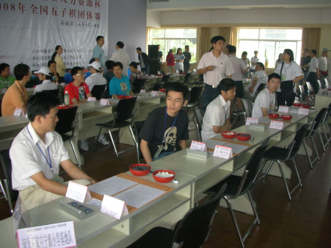
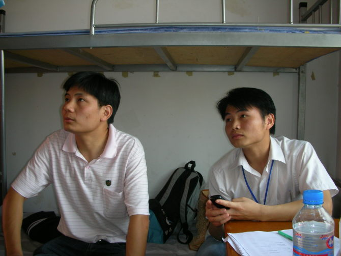
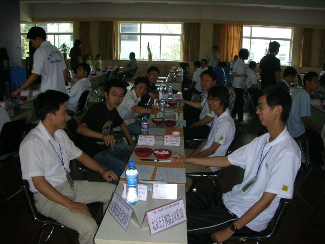
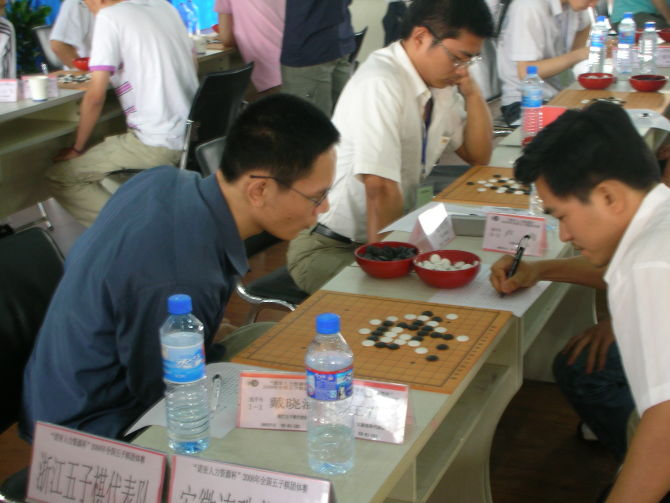
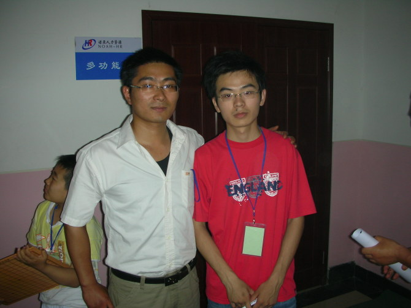
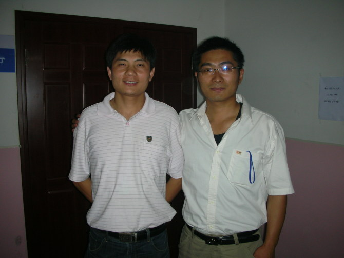
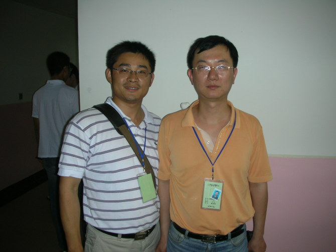
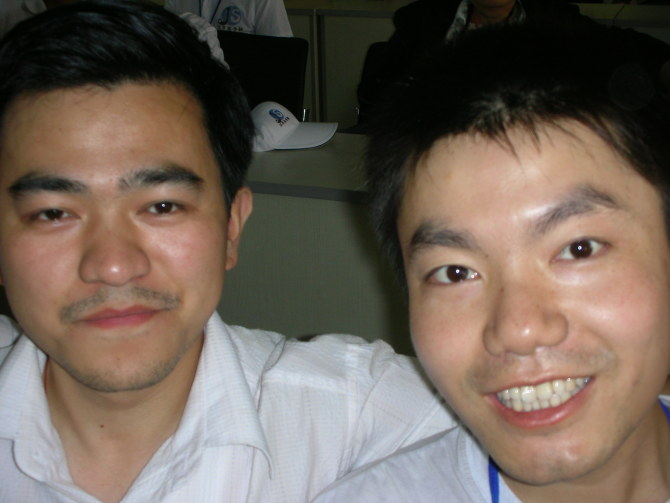
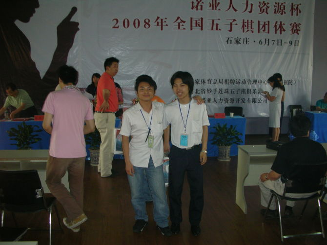
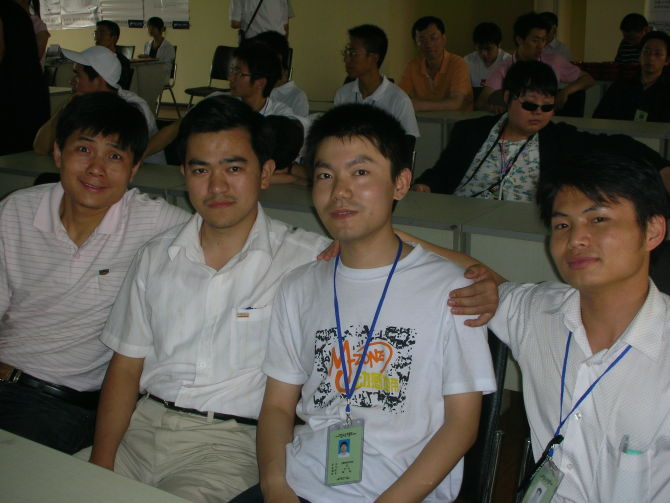
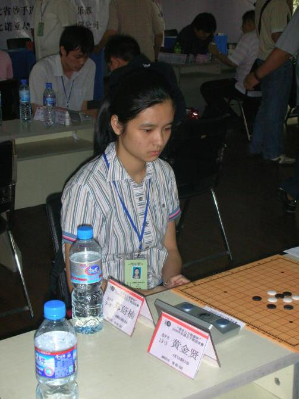
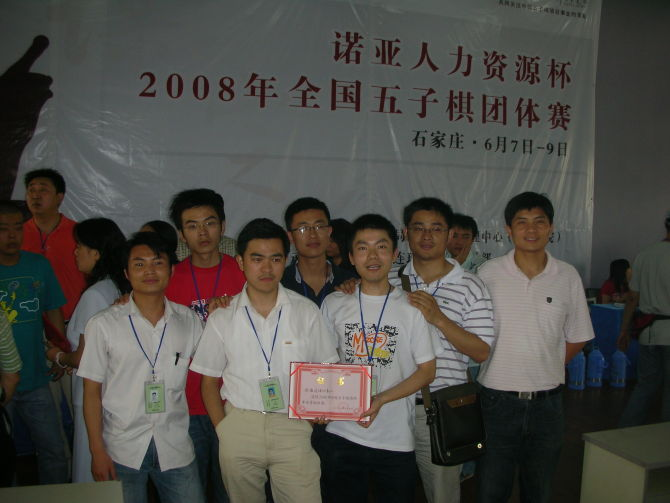
比赛感言 本次比赛，对于我们安徽代表队来说是不易的，我们的选手来自省各地，所有人的聚集，是一份缘、一份情，一份五子串起的情感珠。
赛前的头两个星期，我们做了一个安徽地区的选拨赛，芦海是直接进级的，也是由我们组委会及内部核心共同决定的（因为有些人说三道四），在这里做一个说明。内部的选拨赛，我们的举办是很成功的。苗老师，风光姐，登峰，老王，还有本人（）以及先锋，小杀等等都为我们的选拨赛付出了辛勤的劳动。在这里我觉得最值得表扬的是新华电脑专修学院的张凯还了一队人（其中的4个裁判就是从那里选的），农业大学的小朱，龙圣，袁胜也带了一队人，他们支持着我们，支持着安徽连珠；同时来参赛的还有工大的学友，科大的学友。
我们的全国赛团队就是这样选出来的。
出发前，苗老师和风光姐在火车站送了我们，这是对我们的期望，是对我们的关怀。
比赛，成绩不重要，重在参与，当然我们参与了就要全心全力的拼，爱拼才会赢。虽然我们只取得了11名，但我们很欣慰 ，因为这次的比赛，国内顶尖高手都参与了，我们能与他们一起同场竞技，是一份学习，一份比较和一份钦佩。
我们的五位选手，除芦海和王有志参加过大赛，其他三位选手，都没有参加过，在经验上，技术上都有很大的不足，我们回来的，都说这次学到了不少东西，包括从基础上的，对谱上的东西，对计算力方面的东西，都有一定的提高，但是整个技术能力的提升，还需要在平常不断的去努力，这样才能台阶式的上升。
比赛中的小插曲，在这里就不再说了，我们仅仅希望的是，大家只要有信心，有目标，不懈的努力，就会取得成功，不要气馁，为什么都说坚持就是胜利？我想我们的人生也是需要这些的。
这次的比赛也让我们感受到，全国将抛起一层五子棋热，很
#6 Re:全国五子棋团体赛安徽连珠代表队参赛日记【图爆多，进入请当心】 作者：堂堂 发表时间：2008-6-27 15:12:38
不错，支持
#7 Re:全国五子棋团体赛安徽连珠代表队参赛日记【图爆多，进入请当心】 作者：隐藏菜系 发表时间：2008-6-27 16:21:07
哈哈哈哈!我怎么发现长的相像的人还不少啊~!
#8 Re:全国五子棋团体赛安徽连珠代表队参赛日记【图爆多，进入请当心】 作者：雅匪 发表时间：2008-6-27 19:42:32
我还是认为安徽卫视办得真不错#9 Re:全国五子棋团体赛安徽连珠代表队参赛日记【图爆多，进入请当心】 作者：dyccj 发表时间：2008-6-29 0:16:58
一年没下了,状态能好吗?这次比赛我本来就没准备去,是谁非要我去的?我什么也没说,这里倒写出来了,反正我也不参赛了,随便怎么写吧。#10 Re:全国五子棋团体赛安徽连珠代表队参赛日记【图爆多，进入请当心】 作者：堇色 发表时间：2008-6-30 13:25:33
本次比赛据讲我只胜了三盘。。。还被1个只胜了2盘（还是1.5盘忘记老）的mm豆豆（据说还不会下棋）满盘追杀侥幸逃生不死和掉了。。。大家都说我拖了后腿了。。。。。。额。。。说的不错。。。确实太菜了。。。［ 掌棋宣传员 于 2010-12-4 15:15:40 时花20金币送鲜花一朵］
#11 Re:全国五子棋团体赛安徽连珠代表队参赛日记【图爆多，进入请当心】 作者：牛牛 发表时间：2008-7-4 14:12:52
额..............堇色留言留错地方了吧
#12 Re:全国五子棋团体赛安徽连珠代表队参赛日记【图爆多，进入请当心】 作者：点点 发表时间：2008-7-7 22:22:44
顶一个
#13 Re:全国五子棋团体赛安徽连珠代表队参赛日记【图爆多，进入请当心】 作者：靜電 发表时间：2010-12-4 1:50:22
好想念曾经的老师们
#14 Re:全国五子棋团体赛安徽连珠代表队参赛日记【图爆多，进入请当心】 作者：廊坊五子棋缘 发表时间：2010-12-22 14:13:21
廊坊的棋手张校玮加油！#15 Re:全国五子棋团体赛安徽连珠代表队参赛日记【图爆多，进入请当心】 作者：丁香花开 发表时间：2011-11-11 22:17:18
安徽， 五子 速度发展起来 加油啊！！！